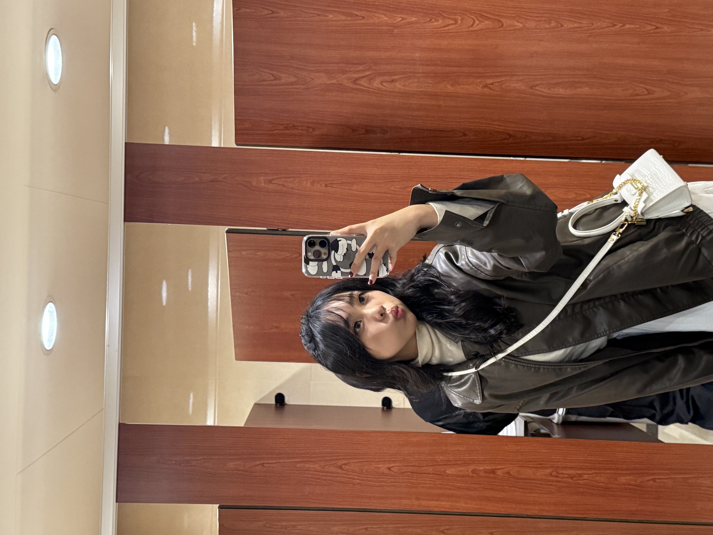

I'm Jessica
外向、随和、学习能力好。这就是我，朱佳燕。
我出生于一个平凡的小家庭，父亲是个商人，
母亲是个家庭主妇，哥哥刚读完大学，我们一家人过得十分幸福。
我性格外向，乐于与人交流，但在学习上我却能静下心来认真学习。
我从小就精通印尼文、英文、中文三种语言，
这对我在台湾留学生活带来了很大的帮助，我能轻松地与来自不同文化背景的人交流。
我尤其热爱数学，我很享受攻克难关之后的成就感，那种费尽了心思解一道题后的感觉，
真的难以形容。小时候我在Kumon（公文式）补习，因为排名前列得了奖状。虽然我后来因为课业繁忙没有继续补，
但这段经历不仅锻炼了我的逻辑思维能力，也奠定了喜爱数学的基础。
高中时我初次接触计算机，我开始学一些简单的编程语言，比如java script,
c++等，也玩了一些编程游戏，这使我开始对计算机科学产生了兴趣。
我最近也有做自己的个人网页，但在做轮播时我的程序代码一直出现错误，
我当时想说要不就放弃轮播，但得到信息老师的帮忙与建议之后我终于成功地完成了这个作品。
除了学业以外，我也有积极参加社团，并担任了韩国研究社的社长。作为社长，
我负责对外交流、监督各个干部的工作等等。我在这短短的一年中锻炼了自己的领导能力、
沟通能力，也在一些与干部们的纷争中学会如何放低自尊心、冷静地解决事情。
我们在期末也有组织了一个成果发表，深受大家的肯定。